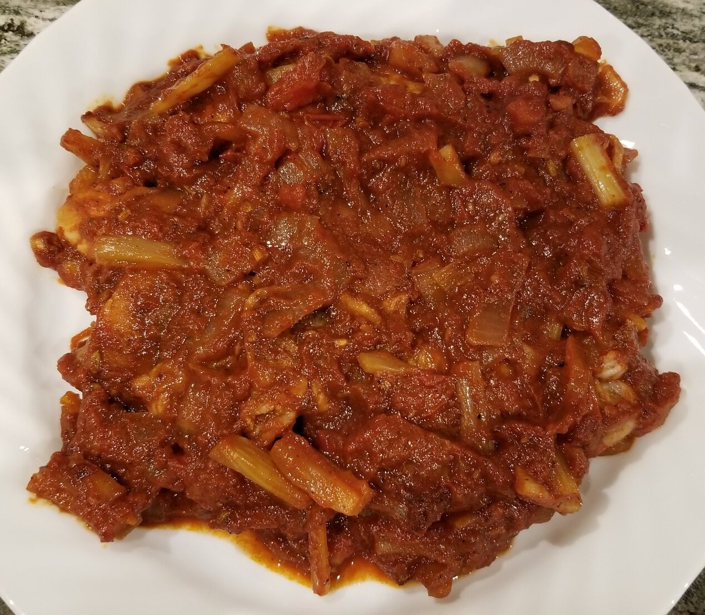

Recipe for Tomato Pork Loin Chops

Ingredients
2 tablespoons olive oil, divided
4 boneless pork loin chops, pounded thin
½ teaspoon fennel seeds, crushed
½ teaspoon red pepper flakes
1 (8 ounce) can tomato sauce
1 teaspoon Worcestershire sauce
Recipe steps:
Step 1
Heat the oil in a skillet over high heat, and quickly brown the
pork chops on both sides. Transfer chops to platter, and keep warm.
Step 2
Reduce skillet heat to medium, and cook the onion until tender.
Mix in the sugar, chili powder, fennel, red pepper flakes,
and oregano. Stir in the tomato sauce, water, and Worcestershire sauce,
and bring to a boil.
Step 3
Return the pork chops to the skillet.
Cover, reduce heat to low, and cook 10 minutes.
Remove cover, and continue cooking 15 minutes, or to desired doneness.
Return to index